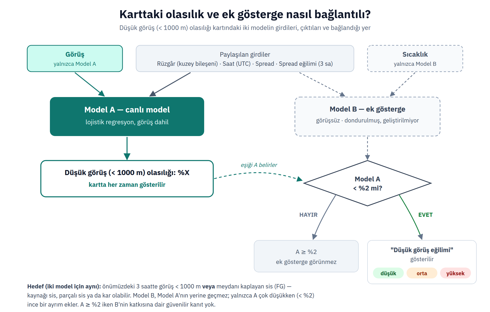

Genel değerlendirme (yapay zekâ özeti — esas kaynak ham rapordur)
**Rüzgâr:** Kuzey-kuzeydoğudan 9 knot (yaklaşık 17 km/s) hızında hafif rüzgâr esiyor, yan bileşen 5 knot seviyesinde. **Görüş:** 10 kilometre ve daha fazla mesafede net görüş var, uçuş için rahat koşullar. **Gökyüzü:** 3300 feet (yaklaşık 1000 metre) yükseklikte parçalı bulutlar, 8000 feet (yaklaşık 2400 metre) yükseklikte çok bulutlu katman var; yağış yok. **Uçuşa etkisi:** Gözlemlenen veriler kısıtlayıcı unsur içermiyor; görüş iyi, rüzgâr hafif, yağış yok ve hava durumu önümüzdeki 2 saatte önemli değişiklik göstermeyecek.
15°C / çiy 13°C · QNH 1023
06R
baş8 kt
yan6 kt soldan
rüzgâra göre hesaplanmış tercih — aktif pisti ATC belirler
Pist 06L
030° 9 kt
Pist 06R
030° 10 kt
Pist 24L
030° 7 kt
Pist 24R
010° 8 kt
Meteorolojik tercih
06R
06L: alan rüzgârından; 06R, 24L, 24R: AD 2.15 anemometreleri; kuyruk limiti 10 kt — CIKARSANAN varsayım — RWYCC bildirilmedi, yağış yok, kuru pist kabul edildi
Gözlem
METAR
Rapor türüDüzenli hava gözlem raporu
LTFJ
İstasyonHavalimanı ICAO kodu
011720Z
ZamanYayım zamanı — ayın 1'i saat 17:20 UTC
03009KT
Rüzgâr030° (kuzeydoğu) yönünden 9 kt
9999
Görüş10 km ve üzeri
SCT033
BulutParçalı (3–4/8), 3300 ft
BKN080
BulutÇok bulutlu (5–7/8), 8000 ft
15/13
Sıcaklık15 °C, çiy noktası 13 °C — spread 2 °C
Q1023
BasınçQNH 1023 hPa
NOSIG
EğilimÖnümüzdeki iki saatte önemli değişiklik beklenmiyor
NotlarBu noktadan sonrası ulusal ek bilgidir (RMK)
Genel değerlendirme (yapay zekâ özeti — esas kaynak ham rapordur)
**Genel:** İstanbul Sabiha Gökçen Havalimanı bölgesinde değişken bulutlu hava beklenmektedir; dönem içinde sağanak ve gök gürültülü sağanak geçişleri öngörülmektedir. • **0118/0122 UTC:** Geçici olarak hafif sağanak. • **0200/0204 UTC:** Kademeli geçişle hafif sağanak sona eriyor, bulutlar 2500 ft'e alçalıyor. • **0204/0207 UTC:** Rüzgar kademeli olarak 18 knot'a güçleniyor. • **0207/0214 UTC:** %40 ihtimalle geçici olarak 4000 m görüş, gök gürültülü sağanak ve 1800 ft'de kümülonimbus bulutları; 0211/0214 UTC'de hafif sağanak ve 1800 ft'de kümülonimbus bulutları.
Çözümleme · 6 grup
Tahminin başlangıcıayın 1'i saat 18:00 UTC – ayın 2'si saat 18:00 UTC
TAF
Rapor türüMeydan tahmini
LTFJ
İstasyonHavalimanı ICAO kodu
011640Z
ZamanYayım zamanı — ayın 1'i saat 16:40 UTC
04007KT
Rüzgâr040° (kuzeydoğu) yönünden 7 kt
9999
Görüş10 km ve üzeri
SCT030
BulutParçalı (3–4/8), 3000 ft
BKN080
BulutÇok bulutlu (5–7/8), 8000 ft
Geçici olarakayın 1'i saat 18:00 UTC – ayın 1'i saat 22:00 UTC
-SHRA
Hava olayıHafif sağanak yağmur
Tedricen değişiyorayın 2'si saat 00:00 UTC – ayın 2'si saat 04:00 UTC
-SHRA
Hava olayıHafif sağanak yağmur
BKN025
BulutÇok bulutlu (5–7/8), 2500 ft
BKN080
BulutÇok bulutlu (5–7/8), 8000 ft
Tedricen değişiyorayın 2'si saat 04:00 UTC – ayın 2'si saat 07:00 UTC
04018KT
Rüzgâr040° (kuzeydoğu) yönünden 18 kt
%40 olasılıkla, geçici olarakayın 2'si saat 07:00 UTC – ayın 2'si saat 11:00 UTC
4000
Görüş4000 m
TSRA
Hava olayıGök gürültülü yağmur
FEW018CB
BulutAz bulutlu (1–2/8), 1800 ft — kümülonimbus
BKN025
BulutÇok bulutlu (5–7/8), 2500 ft
Geçici olarakayın 2'si saat 11:00 UTC – ayın 2'si saat 14:00 UTC
Önümüzdeki saatlerOpen-Meteo model tahmini3 saat önceki model çıktısı
Bu bir model tahminidir, TAF değildir — resmî havacılık tahmini yerine geçmez, operasyonel karar için TAF ve resmî kaynaklar esastır. Eğilimi görmek için konulmuştur.
21:00
22:00
23:00
00:00
01:00
02:00
03:00
04:00
05:00
spread°C
2.7
2.7
2.3
2.1
2.0
1.8
1.8
1.7
1.6
görüşkm
10+
10+
10+
10+
10+
10+
10+
10+
10+
rüzgârkt
11
10
9
8
7
7
7
7
7
alçak bulut%
45
41
48
46
52
51
46
46
47
sınır tabakasım
560
450
330
325
165
265
350
320
465
Saatler yereldir. "sis" işareti, modelin o saat için sis kodu (WMO 45/48) verdiğini gösterir. Eksik değer — ile yazılır, satır gizlenmez.
Düşük görüş (< 1000 m) olasılığıİSTATİSTİKSEL
%0.4düşük
Önümüzdeki 3 saat içinde görüşün 1000 m altına düşmesi veya meydanı kaplayan sis (FG) bildirilmesi olasılığı. Kaynağı sis, parçalı sis ya da kar olabilir.
Normalde bu oran ortalama %0.8 civarındadır — şu an bundan yaklaşık 2 kat düşük.
Düşük görüş eğilimi: yüksek
Görüş henüz düşmemiş olsa da, mevcut nem, rüzgâr ve sıcaklık koşullarının görüş düşüşüne ne kadar uygun olduğunu gösterir. Resmî bir tahmin değildir, sadece ek bir ipucudur.
LTFJ'nin 2011–2023 METAR arşivinden öğrenilmiş istatistiksel bir tahmindir; resmî tahmin değildir ve TAF'ın yerine geçmez.
Karttaki olasılık ve ek gösterge nasıl bağlantılı?

Görüş geçiş süreleri2011–2026 arşivi · 64 sis olayı
süreler saat cinsinden
%10
%25
medyan
%75
n
Düşme5000→1500 m
0.5
1
1.5
2.5
61
Toparlanma1000→5000 m
1
1.5
2
3
62
Geçmiş sis olaylarının SAYIMIDIR, tahmin değildir. Süreler 30 dakikalık gözlem ızgarasına yuvarlıdır — "0.5 sa" aslında "yarım saat veya daha kısa" demektir, gerçek en hızlı geçişler bu veriyle görülemeyecek kadar hızlı olabilir. Olay tanımı Tardif & Rasmussen (2007).
Düşük görüş/FG ne zaman görülüyor2011–2026 arşivi · 1183 olay gözlemi
Aylar gözlemlerin olay oranı
Oca
%1,25
Şub
Mar
Nis
May
Haz
Tem
Ağu
Eyl
Eki
Kas
Ara
En yoğun aylar: Şubat %1,25, Ocak %0,87, Mart %0,58.
Saat yerel · gözlemlerin olay oranı
00
03
%1,41
06
09
12
15
18
21
Olay gözlemlerinin %48'i 04:00–07:59 arasında; öğleden sonra ve akşam nadir.
Rüzgâr · kat = olay sırasındaki pay / genel pay (1'in üstü: o rüzgârda olay normalden sık)
olay sırasında
genelde
kat
Sakin (≤2 kt)
%16,1
%10,7
1,52×
Kuzey
%14,5
%15,2
0,96×
Kuzeydoğu
%55,2
%44,5
1,24×
Doğu
%4,4
%3,4
1,28×
Güneydoğu
%0,8
%1,3
0,66×
Güney
%3,0
%5,3
0,56×
Güneybatı
%2,8
%10,6
0,26×
Batı
%2,3
%6,3
0,36×
Kuzeybatı
%0,5
%1,3
0,39×
Olay sırasında rüzgâr medyanı 6 kt.
Güneyli rüzgârda (140–250°)
Nadir ama en ağır tip: 22 olaylı gün, olay gözlemlerinin %6,9'i, yalnızca Ekim–Nisan döneminde. Olay süresi medyanı 4 sa (diğer olaylarda 1 sa); olay gözlemlerinin %77'i 550 m altında (diğerlerinde %53).
Geçmişin SAYIMIDIR, tahmin değildir. Olay gözlemi: görüş < 1000 m veya meydanı kaplayan FG — karttaki olasılığın hedefiyle aynı. Görüşü düşüren olayın cinsine bakılmaz; hava kodları: FG 664 · BCFG/MIFG/PRFG 265 · SN 237 · BCFG/MIFG/PRFG+SN 14 · FG+SN 2 · diğer 1. Arşivde SPECI yok (30 dk ızgara) — kısa ve keskin olaylar eksik sayılmış olabilir.
Bilgi amaçlıdır. Operasyonel karar yerine geçmez. Güncel AIP, ATIS, AWOS
ve resmî yayınlar kontrol edilmelidir.
A) Farkındalık Notları
METAR/TAF/AWOS
Şu an için dikkat çeken bir eşik yok.
B) AWOS RVR
MANUAL AWOS
Yükleniyor…
C) LVO Related NOTAM
NOTAM
Yükleniyor…
D) Doküman Referansı DOCUMENT REFERENCE ONLY
Sabiha Gökçen Havalimanı Düşük Görüş Operasyonları Talimatı TL.007 REV.1 — 16.08.2024
Pist
Kategori
İniş RVR (m)
Kalkış RVR (m)
Açıklama
06R
CAT II
550–300
400–125
CAT II iniş ve LVTO kalkış
24L
CAT I
—
—
06L
CAT I
—
—
24R
CAT I
—
400–125
Sadece LVTO kalkış
Kategori
RVR
DH
CAT I
RVR ≥ 550 m
DH ≥ 60 m (200 ft)
CAT II
300 m ≤ RVR < 550 m
30 m (100 ft) ≤ DH < 60 m (200 ft)
RVR eşikleri (madde 6.1.ee)
RVR < 800 m — LVO Hazırlık Safhası6.1.ee, 6.2.a · 550 ≤ Hazırlık Safhası < 800 (madde 6.2.a)
RVR < 550 m — LVO İniş Operasyonları Safhası (CAT II, sadece 06R)6.1.ee, 6.3.1.a · 300 ≤ Uygulama Safhası < 550 (madde 6.3.1.a)
RVR < 400 m — LVO Kalkış Operasyonları Safhası (LVTO, 06R ve 24R)6.1.ee, 6.3.2.b · 125 ≤ Uygulama Safhası < 400 (madde 6.3.2.b)
RVR < 350 m — Tanımlanmış alanlarda zorunlu Follow-me uygulama safhası6.1.ee
Bulut tabanı (ceiling) eşikleri — RVR'dan bağımsız, paralel tetikleyici
LVO Hazırlık Safhası — Bulut tabanının CAT II şartlarına (30 m/100 ft – 60 m/200 ft) düşmesinin beklenmesi6.2.a
LVO İniş Operasyonları Safhası (CAT II, sadece 06R) — Bulut tabanının CAT II değerlerine (200 ft altına) düşmesi; uygulama 30 m/100 ft – 60 m/200 ft arasında sürer6.3.1.a
RVR, LVO/CAT II başlatma limitlerinin üzerinde olsa dahi (RVR ≥ 550 m), ilgili yaklaşma hattında birden fazla hava aracının inişini etkileyip pas geçmelerine neden olan bir bulut oluşumunun pilot raporlarıyla teyit edilmesi durumunda Düşük Görüş Operasyonları başlatılabilir (madde 6.3.1.b). Sonlandırma da bulut oluşumunun kalktığının pilot raporlarıyla teyidiyle yapılır (madde 6.4.b).
"Hazırlık Safhası"nın başlatıldığı 800 m RVR değeri ile CAT I operasyonları limiti olan 800 m Görüş değeri karıştırılmamalıdır (madde 6.1.ee).
06R pisti için CAT II operasyonları uygulanmaya/planlanmaya başladığında LVTO sadece 06R pistinden yapılır; 06R iniş için planlanırken 24R'den LVTO yapılmaz (madde 6.3.2.e).
06L ve 24L pistleri düşük görüş kalkış operasyonlarında (LVTO) kullanılmaz (madde 6.3.2.d).
LVO Hazırlık ve CAT II İniş safhaları RVR'dan BAĞIMSIZ olarak bulut tabanı (ceiling) eşikleriyle de başlatılabilir; ikisi 've/veya' bağlacıyla birbirinden bağımsız tetikleyicilerdir (madde 6.2.a, 6.3.1.a).
Aktif NOTAM'lar
Düz metin özetler NOTAC tarafından otomatik
üretilir ve hata içerebilir — bağlayıcı olan, her kartın altındaki
ham NOTAM metnidir.
Yükleniyor…
Yaklaşan NOTAM'larhenüz yürürlükte değil
Geçmiş / Arama
Bu arama yalnızca botun bugüne kadar yerel olarak gördüğü NOTAM'ları
kapsar — NOTAC'ın kendi tam arşivi değildir.
Yükleniyor…
Bilgi amaçlıdır. Operasyon öncesi güncel resmî NOTAM/PIB kontrol edilmelidir.
Kaynak: NOTAC (FAA NOTAM Management System tabanlı üçüncü taraf servis) —
resmî bir Türk/EUROCONTROL NOTAM kaynağı değildir. Bu bölüm hiçbir operasyonel
öneri üretmez; sayfadaki meteorolojik analiz bu veriden bağımsızdır.
ATC Notes
Bu bölüm ATC tarafından paylaşılan geçici durumsal farkındalık
notlarıdır. Resmî NOTAM veya operasyonel talimat değildir; NOTAM/
METAR/pist analiziyle hiçbir bağlantısı yoktur. Kimlik doğrulaması
yapılmaz — isim yazan kişi tarafından girilir. Her not
oluşturulduktan tam 48 saat sonra otomatik olarak silinir.
Yükleniyor…
Yeni ATC Notu
VFR şartları sağlanıyor
Görüş ve tavan eşiklerin üzerinde.
Eşik: görüş ≥ 5000 m, tavan ≥ 1500 ft (ICAO Annex 2, Tablo 3-1 — FL100 altı, CTR/TMA). Bilgi amaçlıdır, resmî VFR/IFR tespiti yerine geçmez.